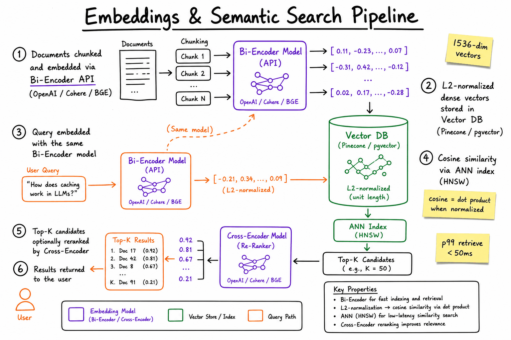
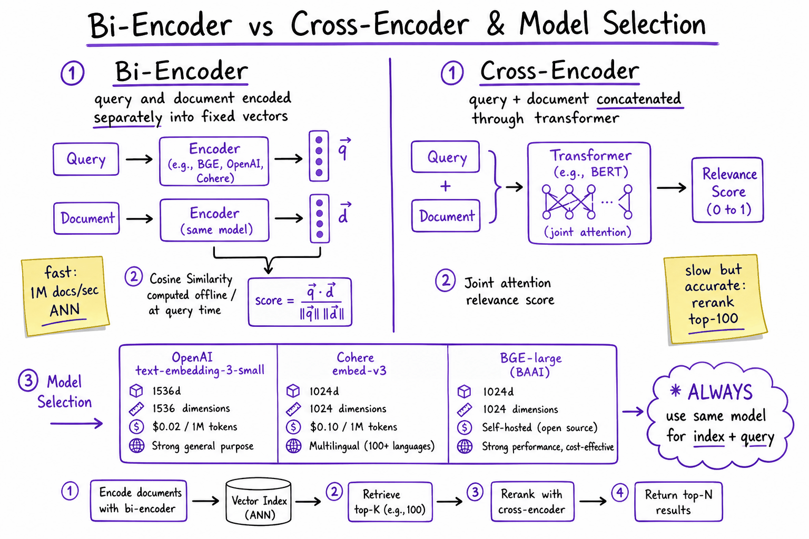
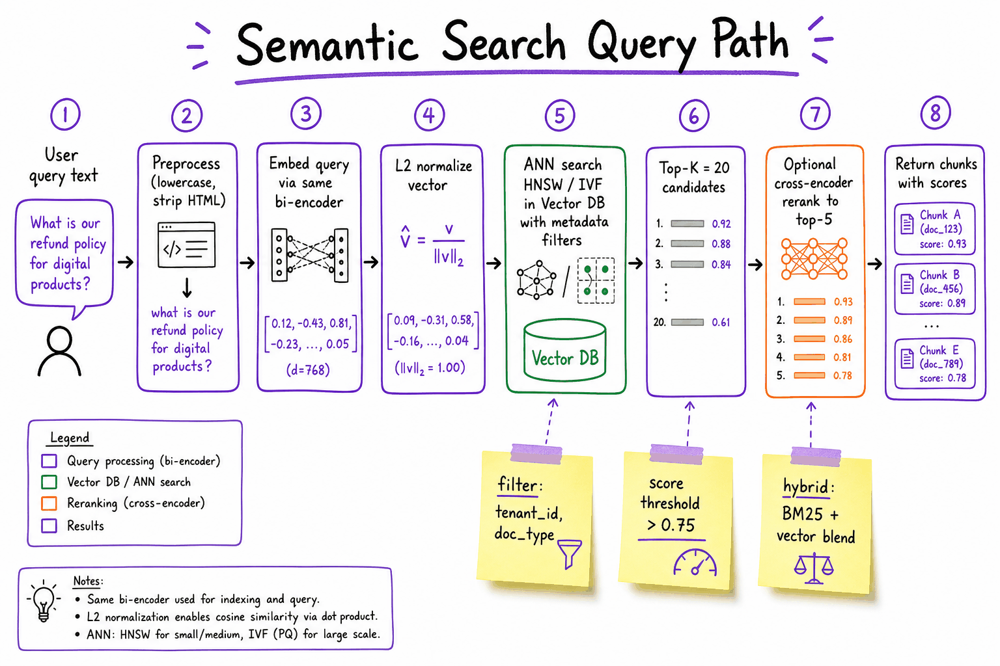

Embeddings // Knowledge & RAG
Turning meaning into numbers: dense vectors, cosine similarity, sentence embeddings and contrastive training.
01 — At a glance
Turn text into dense vectors so meaning—not keywords—drives retrieval. Bi-encoders embed offline at scale; cross-encoders rerank for precision. Cosine similarity on L2-normalized vectors powers every RAG, semantic cache, and recommendation system.

End-to-end semantic search: documents chunked and embedded via a bi-encoder (OpenAI/Cohere/BGE), L2-normalized vectors indexed in a vector DB, query embedded with the same model, ANN retrieval via cosine similarity, optional cross-encoder rerank on top-K.
02 — New words
| Word | Meaning |
|---|---|
| Embedding | A fixed-length list of numbers (a vector) that a model produces for a piece of text, arranged so that texts with similar meaning get similar vectors. |
| Dimension \(d\) | How many numbers are in each vector. Common sizes are 384, 768, 1024 and 1536. Individual dimensions have no human-readable meaning. |
| Dot product | Multiply two vectors position by position and add the results. Large when they point the same way and are long. |
| Cosine similarity | The dot product divided by both vectors' lengths: the cosine of the angle between them. 1 means same direction, 0 unrelated, −1 opposite. |
| L2 normalisation | Dividing a vector by its length so its length becomes 1. After this, dot product and cosine similarity are the same number. |
| Pooling | Combining the per-token vectors into one vector for the whole text: averaging them (mean pooling) or taking one special token's vector. |
| Bi-encoder | A model that embeds the query and the document separately, so documents can be embedded once, ahead of time, and compared by vector arithmetic. |
| Contrastive learning | Training by pulling matching pairs (a question and its answer) together and pushing non-matching pairs apart. |
| InfoNCE loss | The usual contrastive loss: a softmax over similarities that asks the true partner to win against every other item in the batch. |
| In-batch negatives | Using the other examples in the same training batch as the "wrong answers" for each query, so no extra negatives need to be collected. |
| Hard negative | A wrong answer that looks right (same topic, different fact). The examples that teach the model the most. |
| Anisotropy | When a model's vectors all crowd into a narrow cone, so even unrelated texts score a high cosine. |
| Embedding / vector | Text encoded as numbers where similar meaning = close. |
The lesson
03 — The question
Keyword search finds documents containing the words you typed, and fails whenever user and author chose different words for the same thing. Embeddings replace "which words do these texts share?" with "how close are these texts in meaning?", and they do it with arithmetic cheap enough to run over millions of documents per query.
The questions an interviewer actually asks about embeddings:
- What is an embedding, and why does cosine similarity between two of them say anything about meaning?
- How does a model turn a whole sentence into one vector, and how is it trained to make those vectors useful for search?
- Why cosine rather than dot product or Euclidean distance, and what does a score of 0.8 actually mean?
- What does it cost to store and compare them, and when do they fail?
The running example is the support assistant this course builds: a SaaS company's help centre with about 1,200 documents (billing policy, plan details, troubleshooting runbooks), split into roughly 30,000 chunks. A customer types:
"How do I get my money back?"
Four candidate passages from the index:
| ID | Passage |
|---|---|
| refund | "Refunds are issued to the original payment method within 30 days of purchase." |
| password | "To reset your password, open Settings and choose Security." |
| cancel | "Annual plans can be cancelled at any time from the Billing page." |
| faq | "Billing FAQ: invoices, payment methods, plan changes, refunds, account access and more." |
The right answer is "refund". It shares no content word with the question: not "money", not "back", not "get". We will follow this query through every step.
04 — Step 1: why matching words is not enough
A keyword engine such as BM25 (covered in hybrid search) scores a document by the query words it contains, weighted by how rare each word is. Strip the stop words from our question and you are left with "money" and "back". The refund passage contains neither. Its score is zero, and so is the password passage's. The engine has nothing to rank.
This is the vocabulary mismatch problem: users write "money back", "charge reversed", "reimburse"; the policy writer used one of them, and no synonym list covers every paraphrase in every language. What we want is a representation where "get my money back" and "refunds are issued" land near each other because they mean similar things, whatever words they use.
The idea that makes this possible is old and simple: words that appear in similar contexts have similar meanings. "Refund" and "money back" turn up next to "purchase", "cancel", "within 30 days", "credit card". A model trained on enough text can learn that from co-occurrence alone, and store it as geometry.
05 — Step 2: meaning as a direction in space
An embedding is a function \(f\) that maps any text to a vector of \(d\) real numbers. The training goal is that texts with related meaning map to vectors that point in similar directions.
To see the mechanism, pretend \(d = 4\) and each dimension has a nameable meaning: money, account access, time limits, cancellation. (Real models use hundreds of dimensions, none individually interpretable; the toy just lets us do the arithmetic by hand.)
| Text | money | access | time | cancel |
|---|---|---|---|---|
| query: "How do I get my money back?" | 0.9 | 0.1 | 0.0 | 0.3 |
| refund | 0.8 | 0.0 | 0.4 | 0.2 |
| password | 0.0 | 0.9 | 0.1 | 0.0 |
| cancel | 0.3 | 0.1 | 0.3 | 0.8 |
| faq | 1.2 | 0.8 | 0.8 | 0.8 |
The query and the refund passage share no words, but both are mostly "money". Their vectors point in nearly the same direction. The password passage points somewhere else entirely. Search becomes: find the stored vectors that point most nearly the same way as the query vector.
Notice the faq vector. It mentions everything, so it has large values everywhere: it is a long vector pointing in a vague direction. That will matter in the next step.
06 — Step 3: measuring closeness, and why cosine
Three ways to compare two vectors \(\mathbf{a}\) and \(\mathbf{b}\):
- Dot product: \(\mathbf{a} \cdot \mathbf{b} = \sum_i a_i b_i\).
- Cosine similarity: \(\cos\theta = \dfrac{\mathbf{a} \cdot \mathbf{b}}{\lVert \mathbf{a} \rVert\, \lVert \mathbf{b} \rVert}\), where \(\lVert \mathbf{a} \rVert = \sqrt{\sum_i a_i^2}\) is the vector's length. It depends only on the angle \(\theta\) between them.
- Euclidean distance: \(\lVert \mathbf{a} - \mathbf{b} \rVert\), the straight-line distance between the two points.
For our query (length 0.954) against each passage:
| Passage | Length | Dot product | Cosine | Rank by dot | Rank by cosine |
|---|---|---|---|---|---|
| refund | 0.917 | 0.780 | 0.892 | 2 | 1 |
| faq | 1.833 | 1.400 | 0.801 | 1 | 2 |
| cancel | 0.911 | 0.520 | 0.598 | 3 | 3 |
| password | 0.906 | 0.090 | 0.104 | 4 | 4 |
The refund dot product is \(0.9 \times 0.8 + 0.1 \times 0 + 0 \times 0.4 + 0.3 \times 0.2 = 0.78\). The vague faq passage wins on dot product purely because its vector is twice as long. Cosine divides the length out and ranks the specific, correct answer first. That is the core reason text search uses cosine: for meaning, direction is the signal and length is mostly noise (length tends to track how much text there was or how many topics it touched, not how relevant it is).
Normalise once, then everything agrees.
If you divide every vector by its length when you store it, all lengths become 1 and three things happen:
- Dot product equals cosine, so the search engine can use the cheaper dot product (no division per comparison).
- Euclidean distance becomes a fixed function of cosine: \(\lVert \mathbf{a} - \mathbf{b} \rVert^2 = 2 - 2\cos\theta\). For query and refund, \(2 - 2 \times 0.892 = 0.216\), and the squared distance between the normalised vectors is indeed 0.216. Smaller distance always means higher cosine, so all three metrics give the same ranking.
- Scores fall in a fixed range, −1 to 1. That makes them easier to log and plot, but not calibrated: Step 8 explains why a fixed range is not the same as a meaningful number.
Most hosted embedding APIs already return unit-length vectors; many open-source models do not unless you ask. The rule is simple: normalise at ingest and at query time, and configure the vector index to the matching metric.
When dot product is right. Some models are trained with an un-normalised dot product on purpose, letting length carry a signal such as popularity (common in recommendation). The metric must match how the model was trained, so follow the model card.
07 — Step 4: from tokens to one vector per text
Where do real embeddings come from? Three generations, each fixing the previous one's flaw.
Static word vectors (word2vec, GloVe, around 2013) gave every word one fixed vector, learned by predicting nearby words. They proved the geometric idea, but "bank" had one vector for rivers and money, and averaging word vectors made "the dog bit the man" identical to "the man bit the dog".
Contextual token vectors come from a transformer encoder. The text is split into tokens, every token attends to every other token across several layers, and the last layer outputs one vector per token that reflects its context. "Bank" after "river" and "bank" after "savings" now get different vectors. Word order matters again.
Pooling turns those per-token vectors into one vector for the text. The common choices:
- Mean pooling: average the token vectors, ignoring padding.
- CLS pooling: use the output vector of a special first token that the model was trained to use as a summary.
- Last-token pooling: for decoder-style models, whose last token is the only one that has seen the whole input.
Padding is a real bug source. Texts in a batch are padded to one length, and an attention mask marks the real tokens. Suppose a three-token text is padded to four, with 2-dimensional token vectors \([0.2, 0.8]\), \([0.6, 0.4]\), \([1.0, 0.0]\) and a padding vector \([0, 0]\). The masked mean is \(([0.2,0.8] + [0.6,0.4] + [1.0,0.0]) / 3 = [0.6, 0.4]\). A naive mean over all four rows gives \([0.45, 0.30]\), a vector that depends on how long the other texts in the batch were. A hand-rolled embedding service that forgets the mask returns vectors that change with batch composition.
The pooling method is part of the model: swapping CLS for mean pooling on the same weights silently produces worse vectors.
08 — Step 5: training the space with contrastive learning
A transformer trained only to predict words produces token vectors, but averaging them gives mediocre search embeddings: nothing in its training ever asked that a question land near its answer. Sentence embedding models add a second training stage that asks exactly that.
The data is a large set of pairs that should be close: a question and its answering passage, a search query and the clicked page, a title and its body. Such pairs are mined at scale from the web and Q&A sites, then refined with smaller human-labelled sets.
Training uses a batch of \(B\) pairs \((q_i, p_i)\). Embed all of them, normalise, and compute the \(B \times B\) matrix of cosines \(s_{ij} = \cos(q_i, p_j)\). The diagonal entries are the true pairs; every off-diagonal entry is a negative for free (the other passages in the batch). The InfoNCE loss for query \(i\) is a softmax classification: "pick your own passage out of the \(B\) in the batch":
\[ \mathcal{L}_i = -\log \frac{e^{s_{ii}/\tau}}{\sum_{j=1}^{B} e^{s_{ij}/\tau}} \]Here \(\tau\) is the temperature, a small positive number. Minimising this loss raises \(s_{ii}\) and lowers every \(s_{ij}\) for \(j \neq i\).
Worked, with \(B = 4\) and our money-back query as \(q_1\). Its row of cosines against the four passages in the batch is \([0.82,\ 0.41,\ 0.35,\ 0.60]\), where 0.82 is its true passage. With \(\tau = 0.05\), dividing gives logits \([16.4,\ 8.2,\ 7.0,\ 12.0]\). The softmax probability of the true passage is 0.988, and the loss is \(-\log 0.988 = 0.013\): this query is already well separated, so it contributes almost nothing to the gradient. A random untrained model would score all four about equally, giving a loss near \(\log 4 = 1.386\).
Two design choices hide in that formula, and both are interview material:
- Why in-batch negatives? They are free: a batch of 4,096 pairs gives each query 4,095 negatives with no extra embedding work. That is why these models train with very large batches.
- Why such a small temperature? The gap between a right and a nearly-right answer may be 0.1 in cosine. Dividing by 0.05 turns it into a logit gap of 2, which the softmax can act on. At \(\tau = 1\) the same row gives the true passage only 0.324 probability (loss 1.129), and the loss barely moves as cosines change: too weak a gradient to learn fine distinctions.
09 — Step 6: hard negatives teach the fine distinctions
Random in-batch negatives are mostly easy. The password passage is nothing like a refund question; the model learns to push it away in the first few thousand steps and then learns nothing more from it.
What a support bot needs is the ability to separate "refunds within 30 days" from "annual plans can be cancelled at any time": same topic, different fact. A hard negative is a passage like that, deliberately added to the batch. Usually they are mined by running an existing retriever and taking high-ranked passages that are known not to be the answer.
The effect on the loss is direct. Change our row so the fourth passage is a hard negative scoring 0.80 instead of 0.60: \([0.82,\ 0.41,\ 0.35,\ 0.80]\). At \(\tau = 0.05\), the true passage's probability falls from 0.988 to 0.599, and the loss jumps from 0.013 to 0.513. That query now produces a large gradient, focused precisely on the difference between the two billing passages. One hard negative is worth thousands of random ones.
The risk is the false negative: a "hard negative" that is also a correct answer (two articles that both explain refunds), which training then pushes apart. Mining pipelines drop candidates that score too close to the positive, or have a stronger model check them.
10 — Step 7: queries and documents are different kinds of text
A query is short and phrased as a need; a passage is long and phrased as a statement. The task is asymmetric: we want "question near its answer", not "question near similar questions". Many models therefore tell the two sides apart with a text prefix (for example "query: " versus "passage: ") or an API input-type parameter. If a model was trained that way, use the prefixes exactly, at ingest and at query time; leaving them off is a common cause of "the model scored worse than its benchmark". Model-by-model details belong to choosing an embedding model.
Length is the other asymmetry. An encoder has a maximum input (often 512 tokens, sometimes 8,192), and text beyond it is usually truncated silently. Even within the limit, one vector for a passage covering five topics points at their average and matches none sharply. That is why documents are split first; see chunking.
11 — Step 8: what a score means, and what it does not
A cosine of 0.78 is not a probability, and it is not comparable across models.
Anisotropy. Many models place all their vectors in a narrow cone, so even unrelated texts score high. To see the effect, take 1,000 random unit vectors in 384 dimensions: the average cosine between pairs is 0.000, and 95% of pairs fall below 0.084. Now add the same shared direction to every vector (weight 1.0 against 0.5 for the random part) and renormalise: the average cosine between unrelated items becomes 0.800, with 90% of pairs between 0.78 and 0.82. The ranking information is all in that narrow band. A threshold such as "only answer if similarity > 0.75" would accept everything from this model and might reject good matches from a better-spread model.
No calibration. InfoNCE only teaches the model to rank the right passage above the wrong ones; nothing asks a relevant passage to clear any particular number.
So use embedding scores to rank. If you need a cut-off (to abstain when nothing relevant exists), tune it on labelled queries for this model and re-tune when the model changes, or use a reranker's score. And never compare scores, or mix vectors, from two different models: their coordinate systems are unrelated.
12 — Step 9: where embeddings sit among the alternatives
Bi-encoder versus cross-encoder. Everything above is a bi-encoder: documents are embedded once, ahead of time, and searched in milliseconds. The price is that a document's vector is fixed before the model sees the question. A cross-encoder reads query and document together and outputs one relevance score: far more accurate, far too slow for every document. The standard design uses embeddings to fetch 50 candidates and a cross-encoder to reorder them; see reranking.
Dense versus sparse. Embeddings are dense (every number non-zero); keyword vectors are sparse (one slot per vocabulary word, almost all zero). Dense wins on paraphrase; sparse wins on exact identifiers ("error E-4012", a SKU, a surname) that an embedding blurs into "some error code". Production systems run both and merge; see hybrid search.
13 — A worked example: the money-back query end to end
Putting the steps together for the support assistant:
- Offline, each of the 30,000 chunks is embedded with the document-side prefix, mean-pooled with the attention mask, normalised to length 1 and stored with its chunk ID and the model's name and version.
- At query time, "How do I get my money back?" is embedded with the query-side prefix and normalised: one forward pass over about 10 tokens (milliseconds on a GPU; tens of milliseconds over a hosted API, as an order of magnitude).
- The engine computes the dot product of the query with stored vectors (exactly or approximately, see vector search) and returns the top \(k\).
- In our toy space the ranking by cosine is refund (0.892), faq (0.801), cancel (0.598), password (0.104). The correct passage is first, with zero shared words.
The storage bill: \(30{,}000 \times 1{,}024\) dimensions \(\times\) 4 bytes per 32-bit float \(= 122.9\) MB. Stored as 16-bit floats, 61.4 MB. Trivial at this size; at 10 million chunks the same model needs 41 GB in 32-bit floats, which is when dimension choice and compression start to matter (see choosing an embedding model).
Brute-force comparison is \(30{,}000 \times 1{,}024 \approx 31\) million multiply-adds per query. The arithmetic is cheap; the real cost is reading 123 MB of vectors from memory, which takes on the order of 10 milliseconds on one CPU core (less on several cores, or with float16 vectors). At this scale no approximate index is needed.
14 — Decisions you will make
| Decision | Default | Why |
|---|---|---|
| Similarity metric | Cosine (normalise, then dot product) | Direction carries meaning; length mostly does not. Follow the model card if it says otherwise. |
| Normalisation | At ingest and at query time | Lets the index use the cheap dot product, and all three metrics then rank identically. |
| Text length per vector | Well under the model's maximum (a few hundred tokens) | Beyond the limit text is dropped; long multi-topic text averages into a vague vector. |
| Metadata on every vector | Model name and version, chunk ID, source document | Vectors from different models are incomparable; you need to know which you have. |
15 — In code: similarity, pooling and the contrastive loss
First, the toy space from Steps 2 and 3, showing dot product and cosine disagree until you normalise:
import numpy as np q = np.array([0.9, 0.1, 0.0, 0.3]) # "How do I get my money back?" docs = { "refund": np.array([0.8, 0.0, 0.4, 0.2]), "password": np.array([0.0, 0.9, 0.1, 0.0]), "cancel": np.array([0.3, 0.1, 0.3, 0.8]), "faq": np.array([1.2, 0.8, 0.8, 0.8]), # long, vague vector } def unit(v): return v / np.linalg.norm(v) by_dot = sorted(docs, key=lambda k: -(q @ docs[k])) by_cos = sorted(docs, key=lambda k: -(unit(q) @ unit(docs[k]))) print("dot: ", by_dot) # faq first print("cosine:", by_cos) # refund first # after normalising, squared Euclidean distance = 2 - 2 cos a, b = unit(q), unit(docs["refund"]) print(round(np.sum((a - b) ** 2), 3), round(2 - 2 * (a @ b), 3)) # 0.216 0.216 # masked mean pooling: padding must not count tokens = np.array([[0.2, 0.8], [0.6, 0.4], [1.0, 0.0], [0.0, 0.0]]) mask = np.array([1, 1, 1, 0]) print((tokens * mask[:, None]).sum(0) / mask.sum(), tokens.mean(0)) # [0.6 0.4] vs [0.45 0.3]
Next, InfoNCE with in-batch negatives, exactly as a training step computes it. Row 0 is the money-back query from Step 5:
import torch import torch.nn.functional as F # cosines between 4 queries (rows) and the 4 passages in the batch (columns); # the diagonal holds each query's true passage S = torch.tensor([[0.82, 0.41, 0.35, 0.60], [0.30, 0.75, 0.20, 0.25], [0.28, 0.33, 0.71, 0.40], [0.55, 0.20, 0.31, 0.77]]) labels = torch.arange(4) for tau in (0.05, 1.0): per_query = F.cross_entropy(S / tau, labels, reduction="none") print(tau, [round(x, 3) for x in per_query.tolist()]) # tau=0.05: row 0 loss 0.013; tau=1.0: row 0 loss 1.129 hard = S.clone(); hard[0, 3] = 0.80 # add a hard negative for query 0 print(round(F.cross_entropy(hard / 0.05, labels, reduction="none")[0].item(), 3)) # 0.513
With a real model the call is short. The block below uses the sentence-transformers library, which is not installed in this course's sandbox; it is written against its documented API:
# needs: pip install sentence-transformers (downloads a model; not installed here) from sentence_transformers import SentenceTransformer model = SentenceTransformer("BAAI/bge-small-en-v1.5") # 384 dimensions passages = ["Refunds are issued to the original payment method within 30 days of purchase.", "To reset your password, open Settings and choose Security."] P = model.encode(passages, normalize_embeddings=True) Q = model.encode(["Represent this sentence for searching relevant passages: How do I get my money back?"], normalize_embeddings=True) # this model's query-side prefix print(Q @ P.T) # the refund passage should score clearly higher
Quick reference
16 — What & Why
Functional
- Convert text (documents, queries, product titles) into fixed-size numeric vectors that capture semantic meaning
- Find the most similar items to a query by vector distance, not exact keyword match
- Support multilingual and paraphrase queries ("refund policy" matches "how do I get my money back")
- Enable retrieval-augmented generation (RAG), deduplication, clustering, and recommendation
Non-Functional
- Latency: query embed <100ms; ANN search p99 <50ms on 10M vectors
- Recall: top-20 recall@100 >95% vs brute-force (HNSW tuning)
- Consistency: same embedding model + version for index and query (re-embed on model change)
- Cost: embedding API ~$0.02–0.13 per 1M tokens; self-hosted BGE eliminates per-token cost
- Dimensionality: 384–3072 dims; higher dims = more storage + slower ANN, not always better recall
Why not keyword search? BM25 misses synonyms, paraphrases, and cross-language matches. Embeddings capture distributional semantics—words that appear in similar contexts get similar vectors. Hybrid (BM25 + vector) is production default.
17 — Core Concepts
| Term | Definition | Gotcha |
|---|---|---|
| Dense vector / embedding | Fixed-length float array (e.g. 1536 dims) representing text semantics. | Not human-interpretable; nearest-neighbor in vector space = semantic similarity. |
| Cosine similarity | cos(θ) = A·B / (||A|| × ||B||); range −1 to 1. | After L2 normalization, cosine = dot product. Most vector DBs assume normalized vectors. |
| L2 normalization | Scale vector to unit length: v / ||v||. | Skip this and cosine vs dot product diverge. OpenAI/Cohere return pre-normalized vectors. |
| Bi-encoder | Query and document encoded independently; similarity = vector distance. | Fast (embed once, search many). Weaker than cross-encoder for fine-grained relevance. |
| Cross-encoder | Query + document concatenated; joint transformer attention produces relevance score. | Slow (O(n) forward passes). Use only on top-K candidates from bi-encoder. |
| ANN index | Approximate nearest neighbor (HNSW, IVF, PQ) for sub-linear search. | Tuning ef_search / nprobe trades latency vs recall. Always benchmark. |
| Embedding drift | Model version change shifts vector space; old index incompatible with new queries. | Version-tag embeddings; re-embed entire corpus on model upgrade. |
| Matryoshka embeddings | Truncated prefix of vector retains most signal (OpenAI v3, Cohere v3). | Store full dim; query with truncated dim for speed/storage tradeoff. |
18 — API / Interface Surface
OpenAI Embeddings
POST https://api.openai.com/v1/embeddings
{
"model": "text-embedding-3-small",
"input": ["query text", "doc chunk 1", ...],
"dimensions": 1536 // optional; Matryoshka truncate
}
→ { "data": [{ "embedding": [0.012, -0.034, ...], "index": 0 }] }
Cohere Embed v3
POST https://api.cohere.ai/v1/embed
{
"model": "embed-english-v3.0",
"texts": ["..."],
"input_type": "search_query" | "search_document",
"embedding_types": ["float"]
}
→ { "embeddings": { "float": [[...]] } }
Cohere requires different input_type for queries vs documents—asymmetric embedding. OpenAI uses the same call for both.
Self-hosted (sentence-transformers / BGE)
from sentence_transformers import SentenceTransformer
model = SentenceTransformer("BAAI/bge-large-en-v1.5")
query_vec = model.encode("how to reset password", normalize_embeddings=True)
doc_vecs = model.encode(chunks, normalize_embeddings=True, batch_size=64)
Vector DB query (Pinecone-style)
index.query(
vector=query_vec,
top_k=20,
filter={"tenant_id": "acme", "doc_type": "policy"},
include_metadata=True
)
19 — When to Use / When NOT
| Scenario | Use Embeddings? | Alternative |
|---|---|---|
| Semantic doc search, RAG retrieval | Yes — core use case | Hybrid with BM25 for exact-match terms (SKUs, error codes) |
| Exact keyword / ID lookup | No | BM25, inverted index, or direct key lookup |
| Deduplication / clustering | Yes | MinHash for near-duplicate at web scale (cheaper) |
| Real-time personalization (<5ms) | Maybe | Precomputed user vectors + in-memory ANN; or feature store |
| Structured SQL filters ("price < $50") | Hybrid | Metadata pre-filter in vector DB, then vector search |
| Small corpus (<1K docs) | Overkill | Brute-force cosine in memory, or even LLM in-context |
| Multilingual without translation | Yes | Cohere multilingual-v3 or BGE-M3 |
Rule of thumb: if the user might phrase the question differently than the document, use embeddings. If they know the exact term (order ID, SKU), use keyword.
20 — Architecture
INGEST (offline / batch)
Documents → Chunker → Bi-Encoder API → L2 Normalize → Vector DB (HNSW)
↑ ↓
same model metadata: {doc_id,
+ version chunk_idx, tenant}
QUERY (online)
User Query → Preprocess → Bi-Encoder → L2 Normalize → ANN Search (top-K=20)
↓
[Optional] Cross-Encoder Rerank → top-5
↓
Context to LLM (RAG) or direct results
21 — Dense Vectors
A dense embedding is a learned mapping from variable-length text to a fixed-dimensional real vector. Unlike sparse bag-of-words (one dimension per vocabulary token, mostly zeros), every dimension carries signal.
How they're learned
- Contrastive learning: pull similar pairs closer, push dissimilar apart (InfoNCE loss). MS MARCO, NLI datasets.
- Dual-tower architecture: shared or separate transformer encoders for query/doc towers (bi-encoder).
- Pooling: mean-pool last hidden states (most common), CLS token, or last-token (decoder models).
Properties that matter in production
| Property | Typical range | Impact |
|---|---|---|
| Dimensions | 384, 768, 1024, 1536, 3072 | Storage = N × dim × 4 bytes (float32). 1M × 1536 = ~6 GB. |
| Precision | float32, float16, int8 | PQ/scalar quantization cuts memory 4–32× with ~1–3% recall loss. |
| Max input tokens | 512–8192 | Long docs must be chunked before embedding. |
import numpy as np
def l2_normalize(v: np.ndarray) -> np.ndarray:
norm = np.linalg.norm(v, axis=-1, keepdims=True)
return v / np.clip(norm, 1e-12, None)
# 1536-dim example
vec = np.random.randn(1536)
unit = l2_normalize(vec)
assert abs(np.linalg.norm(unit) - 1.0) < 1e-6
22 — Cosine Similarity & Normalization
Cosine similarity measures the angle between two vectors, ignoring magnitude. Two documents of different length can still be semantically similar if their direction in embedding space aligns.
Why normalize?
- After L2 normalization, cosine similarity = dot product — one multiply-add loop, no division.
- Vector DBs (Pinecone, pgvector with
vector_cosine_ops) assume unit vectors for index efficiency. - Prevents long documents from dominating via larger vector norms (some models still vary norm slightly).
def cosine_similarity(a: np.ndarray, b: np.ndarray) -> float:
a_norm = l2_normalize(a)
b_norm = l2_normalize(b)
return float(np.dot(a_norm, b_norm))
def dot_product_search(query: np.ndarray, matrix: np.ndarray) -> np.ndarray:
"""matrix: (N, dim) pre-normalized doc vectors"""
q = l2_normalize(query)
return matrix @ q # scores shape (N,)
Interview trap: "Why cosine not Euclidean?" — For normalized vectors, Euclidean distance and cosine are monotonically related: ||a−b||² = 2(1 − cosθ). Use cosine when magnitude is meaningless (text semantics).
Score interpretation
| Cosine score | Meaning | Action |
|---|---|---|
| > 0.85 | Near-duplicate or very strong match | Return directly; dedup |
| 0.70 – 0.85 | Relevant | Include in RAG context |
| 0.50 – 0.70 | Weak / tangential | Filter out or rerank |
| < 0.50 | Unrelated | Drop; consider "no results" fallback |
Thresholds are model-dependent—calibrate on your eval set, not these defaults.
23 — Bi-Encoders vs Cross-Encoders

Bi-encoder: query and document encoded separately; cosine at search time (fast, indexable). Cross-encoder: query+doc through joint attention (accurate, O(n) per candidate). Production pattern: bi-encoder retrieve top-100, cross-encoder rerank to top-5.
| Bi-Encoder | Cross-Encoder | |
|---|---|---|
| Architecture | Two independent encoders (or shared weights, separate forward passes) | Single transformer; query and doc concatenated with [SEP] |
| Similarity | Cosine / dot product of fixed vectors | Classification head score (0–1 relevance) |
| Index-time cost | Embed each doc once — O(N) | Cannot pre-compute; must score each (query, doc) pair |
| Query-time cost | 1 embed + ANN search — O(log N) | K forward passes for K candidates |
| Latency (top-100 rerank) | ~50ms total retrieve | ~200–500ms on GPU batch |
| Recall@100 | Good (~85–90%) | Excellent (~95%+) but only on scored pairs |
| Examples | OpenAI ada, BGE, E5, Cohere embed | ms-marco-MiniLM-L-6-v2, Cohere rerank-v3, bge-reranker-large |
Two-stage retrieval is the production standard: bi-encoder casts a wide net (recall), cross-encoder sharpens precision on the shortlist. Never cross-encode your full corpus.
# Stage 1: bi-encoder ANN (see ../tech/vector-databases.html)
candidates = vector_db.search(query_vec, top_k=100)
# Stage 2: cross-encoder rerank
from sentence_transformers import CrossEncoder
reranker = CrossEncoder("BAAI/bge-reranker-base")
pairs = [(query, c.text) for c in candidates]
scores = reranker.predict(pairs)
ranked = sorted(zip(candidates, scores), key=lambda x: x[1], reverse=True)[:5]
24 — Embedding Model Selection
| Model | Dims | Max tokens | Cost / quality | Best for |
|---|---|---|---|---|
| OpenAI text-embedding-3-small | 1536 (truncatable to 512) | 8191 | $0.02/1M tokens; strong general English | Fast prototyping, managed infra, RAG MVP |
| OpenAI text-embedding-3-large | 3072 | 8191 | $0.13/1M tokens; MTEB top-tier | High-stakes retrieval where recall matters |
| Cohere embed-english-v3 | 1024 | 512 | API pricing; asymmetric query/doc types | Search-optimized; compress to 256/512 dims |
| Cohere embed-multilingual-v3 | 1024 | 512 | 100+ languages | Global products without translation layer |
| BGE-large-en-v1.5 | 1024 | 512 | Free self-hosted; MTEB competitive | On-prem, cost-sensitive, data privacy |
| BGE-M3 | 1024 | 8192 | Self-hosted; dense+sparse+multi-vector | Hybrid retrieval in one model |
| E5-large-v2 | 1024 | 512 | Self-hosted; prefix "query: " / "passage: " | Research-grade open source |
Selection checklist
- Same model for index + query — mixing models breaks vector space alignment.
- Benchmark on YOUR data — MTEB leaderboard ≠ your domain (legal, medical, code).
- Latency budget — API adds network hop; self-hosted on GPU ~5ms/batch of 64.
- Privacy / compliance — PII can't leave VPC → BGE on vLLM/TEI.
- Version pinning — store
model_name@versionin metadata; plan re-embed migrations.
25 — Semantic Search Pipeline

Query path: preprocess → embed (same bi-encoder) → L2 normalize → ANN search with metadata filters → top-K candidates → optional cross-encoder rerank → return scored chunks. Hybrid systems blend BM25 score with vector score.
ef_search for recall/latency.# Hybrid search score fusion (Reciprocal Rank Fusion)
def rrf_score(rank_bm25: int, rank_vector: int, k: int = 60) -> float:
return 1 / (k + rank_bm25) + 1 / (k + rank_vector)
# Or weighted linear: 0.3 * bm25_norm + 0.7 * cosine
See The RAG pipeline for how retrieved chunks feed the LLM, and Vector search & databases for index tuning (HNSW, IVF, filtering).
More detail
26 — Embeddings: turning meaning into numbers
To search by meaning (not keywords) and to give models your data, we need a second kind of model: the embedding model.
27 — The idea
An embedding model turns a piece of text into a list of numbers — a vector (e.g. 768 or 1536 numbers). The magic property: similar meaning → vectors close together; different meaning → far apart.
"car loan" → [0.12, -0.04, 0.88, …] ┐ close together "auto financing" → [0.11, -0.02, 0.85, …] ┘ (similar meaning) "knee surgery" → [-0.7, 0.33, 0.10, …] far away
You measure closeness with cosine similarity (the angle between two vectors: 1 = same direction/meaning, 0 = unrelated). This turns "find similar meaning" into "find nearby points," which computers do fast. The model that produces these vectors is a transformer encoder — same architecture family as the generative models from Math & ML foundations, but trained with a contrastive objective: pull pairs that mean the same thing together, push unrelated pairs apart, over hundreds of millions of (query, relevant passage) pairs. Nobody hand-designs the dimensions; "dimension 412 ≈ finance-ness" is an emergent artifact, not a schema.
Two different models
A generative model creates text. An embedding model measures text (returns a vector). Both are "AI models" but do opposite jobs. RAG uses both: the embedder to find the right facts, the generator to write the answer.28 — See it: real sentences, real numbers
Don't take the geometry on faith — compute it. This runs locally with sentence-transformers (no API key) and prints a similarity matrix you can actually read.
from sentence_transformers import SentenceTransformer import numpy as np model = SentenceTransformer("all-MiniLM-L6-v2") # 384-dim, ~80MB, runs on CPU sents = [ "How do I refinance my car loan?", # 0 "Options for auto financing and rates", # 1 "My knee hurts after the surgery", # 2 "Post-operative knee pain management", # 3 "The bank denied my loan application", # 4 ] # normalize_embeddings=True → unit-length vectors, so dot product == cosine V = model.encode(sents, normalize_embeddings=True) # shape (5, 384) sim = V @ V.T # (5,5) cosine matrix print(" " + " ".join(f"s{i} " for i in range(len(sents)))) for i, row in enumerate(sim): print(f"s{i} " + " ".join(f"{x:+.2f}" for x in row))
Typical output (illustrative — exact values vary by model version):
s0 s1 s2 s3 s4 s0 +1.00 +0.71 +0.07 +0.05 +0.48 s1 +0.71 +1.00 +0.04 +0.06 +0.41 s2 +0.07 +0.04 +1.00 +0.78 +0.02 s3 +0.05 +0.06 +0.78 +1.00 +0.01 s4 +0.48 +0.41 +0.02 +0.01 +1.00
Read it like a heatmap: the two car-loan sentences (s0, s1) cluster at ~0.71 despite sharing almost no words ("refinance" vs "financing options"). The two knee sentences (s2, s3) cluster at ~0.78 — note s3 is clinical register, s2 is casual, and the model bridges them. s4 ("bank denied my loan") sits between the loan cluster (~0.45) and nowhere near the medical one (~0.02). That in-between score is the whole story of vector search: it's fuzzy, graded relevance — not a yes/no keyword match.
Cosine scores are not probabilities
A cosine of 0.71 does not mean "71% relevant." Score scales differ wildly across models: some embedders rarely go below 0.6 for any English pair (anisotropy — all vectors crowd into a cone), others spread scores across the full range. Consequences: (1) never hard-code a threshold like "keep hits above 0.8" when switching models; recalibrate on your own data. (2) Never compare scores across models. (3) Only relative order within one model's results is trustworthy — which is exactly what top-K search uses.29 — Dense vs sparse: a worked example where each wins
Embeddings ("dense" vectors — every dimension has a value) have an older sibling: sparse lexical vectors like BM25, where each dimension is a vocabulary word and almost all entries are zero. They fail in opposite directions, which is why production systems run both (hybrid search, Ch. on vector DBs).
Case 1 — dense wins. Corpus doc: "Employees may carry over unused paid leave into the next calendar year, up to a limit of five days." Query: "can I roll over my remaining vacation days?" Word overlap after stopword removal: essentially only "days". BM25 scores this near-zero and ranks it below any doc that happens to repeat "vacation". A dense embedder maps "carry over unused paid leave" and "roll over remaining vacation" to nearly the same point — cosine ~0.7 (illustrative) — and retrieves it at rank 1. Meaning matched, vocabulary didn't.
Case 2 — sparse wins. Corpus of 4,000 support tickets, one of which mentions error code "E-4417 on the KX-220 controller". Query: "E-4417 KX-220". To an embedding model these alphanumeric codes are rare tokens seen almost never in training; their vectors are nearly meaningless, so the true doc might land at rank 40 behind generically "controller-error-ish" tickets. BM25 treats "E-4417" as a very rare term (high IDF), and the one document containing it wins by a landslide. Exact identifiers — SKUs, error codes, product names, legal citation numbers, function names — are sparse territory.
| Dense (embeddings) | Sparse (BM25 / SPLADE) | |
|---|---|---|
| Matches on | Meaning, paraphrase, synonyms, cross-lingual (with multilingual models) | Exact tokens, weighted by rarity |
| Fails on | Rare identifiers, codes, novel jargon, negation nuances | Paraphrase, synonyms, "different words, same idea" |
| Index cost | 1–6 KB/chunk of floats + ANN index | Inverted index, very compact, decades of tooling |
| Verdict | Ship hybrid: run both, fuse with RRF (Ch. RAG pipeline). Each covers the other's blind spot. | |
30 — Dimensions, normalization, and what they cost you
Three practical mechanics that bite people in week one:
1. Dimensionality is a storage/quality dial. Each vector of dimension d costs d × 4 bytes as float32. Worked numbers: 1M chunks at 1536-dim = 1,000,000 × 1536 × 4 ≈ 6.1 GB of raw vectors (before the ANN index, which adds 1.5–2×). The same corpus at 384-dim ≈ 1.5 GB. Modern models trained with Matryoshka representation learning (e.g. OpenAI text-embedding-3-large) let you truncate a 3072-dim vector to the first 256–1024 dims and re-normalize, keeping most quality — a free 3–12× storage cut you opt into at index time.
2. Cosine vs dot product vs Euclidean. On unit-normalized vectors they induce the same ranking: cosine(a,b) = a·b, and ‖a−b‖² = 2 − 2·a·b. So the standard move is: normalize once at embed time, then use plain dot product (cheapest op) everywhere.
import numpy as np def normalize(v: np.ndarray) -> np.ndarray: """Unit length. After this, dot == cosine and L2 rank == cosine rank.""" n = np.linalg.norm(v, axis=-1, keepdims=True) return v / np.clip(n, 1e-12, None) # clip: never divide by zero def truncate_matryoshka(v: np.ndarray, dims: int) -> np.ndarray: """Keep first `dims` components — ONLY valid for Matryoshka-trained models. Must re-normalize after truncation or scores are silently wrong.""" return normalize(v[..., :dims]) emb = get_embeddings(texts) # e.g. (N, 3072) from the API emb256 = truncate_matryoshka(emb, 256) # 12x smaller index assert abs(np.linalg.norm(emb256[0]) - 1.0) < 1e-5
3. Query vs document asymmetry. Several model families (E5, BGE) were trained with instruction prefixes: documents embedded as "passage: …", queries as "query: …". Skip the prefixes and you can lose several recall points with no error message. Read the model card; this is the most common silent misconfiguration in RAG systems.
31 — Choosing an embedding model
Illustrative snapshot (early 2026); check the MTEB leaderboard for current numbers, then always re-verify on 50–100 queries from your own domain — leaderboard rank and your-corpus rank disagree constantly.
| Model | Dims | Hosting | Sweet spot | Watch out |
|---|---|---|---|---|
all-MiniLM-L6-v2 | 384 | Local, CPU-fine | Prototypes, small corpora, laptops | English-centric, 256-token effective window |
BAAI/bge-m3 | 1024 | Local GPU | Multilingual; emits dense + sparse in one pass | Heavier; needs prefix conventions |
intfloat/e5-large-v2 | 1024 | Local GPU | Strong English retrieval, permissive license | Requires "query:"/"passage:" prefixes |
OpenAI text-embedding-3-large | 256–3072 | API | Zero-ops quality, Matryoshka truncation | Per-token cost; data leaves your infra; re-embed to migrate off |
Cohere embed-v3 / Voyage | ~1024 | API | Retrieval-tuned, good compression options | Same vendor-coupling: vectors are model-locked |
Vectors are model-locked
Use the same embedding model (and version, and prefix convention) for stored data and queries, or the geometry won't align — different models' vector spaces are mutually meaningless, even at identical dimensions. Corollary: switching embedders means re-embedding the entire corpus. Store the raw text and the model name alongside every vector so you always can.Practical notes
Popular models: OpenAItext-embedding-3, BAAI/bge, intfloat/e5, all-MiniLM. There are multimodal embeddings (text+image in one space) too — CLIP-style models let "photo of a beach at sunset" retrieve actual images. Domain jargon may need a domain-tuned embedder: on legal or biomedical text, a general model may cluster "assignment" (of a contract) with homework; fine-tuned embedders (or a reranker on top, see Advanced RAG) fix this. Also mind context windows: most embedders effectively handle 512 tokens; feeding a 3,000-token chunk means most of it is truncated or averaged into mush — chunking (The RAG pipeline) exists partly because of this.32 — Mini-scenario: the demo that lied
You build a search MVP over your company wiki with all-MiniLM-L6-v2. Demo queries — "how do I request time off?", "what's the deployment process?" — work beautifully; leadership is thrilled. Two weeks post-launch, support tickets: searches for "PX-Gateway timeout config" return on-call philosophy pages, and German-language pages are invisible to German queries. Nothing is "broken" — you hit both known blind spots at once: exact identifiers need sparse/hybrid search, and MiniLM is English-only. The fix isn't a better prompt; it's bge-m3 (multilingual, dense+sparse) plus hybrid fusion — and a re-embed of the whole corpus, which is why you stored raw text next to every vector. Total cost of the migration: one batch job. Total cost if you hadn't kept the text: re-crawling the wiki.
Exercises
- Run
cosine_demo.py, then add the sentence "I need money for a new vehicle" and predict its row of the matrix before running. Were you right about whether it lands closer to s0/s1 or s4? - Take 20 FAQ pairs from any product's help site. Embed questions and answers; for each question, check whether its true answer ranks #1 by cosine. Report recall@1 and recall@3.
- Break an embedder on purpose: craft 3 queries with exact identifiers (invent error codes) against 30 short docs, and show BM25 (use
rank_bm25) beating cosine on them. Then show 3 paraphrase queries where cosine beats BM25. - Embed the same 100 texts with a Matryoshka-capable model at full dims and truncated to 256 dims (re-normalized). Compute how often the top-5 neighbor sets overlap. How much quality did 12× less storage cost?
- Using an E5-family model, embed a corpus once with the "passage:" prefix and once without, querying with "query:" both times. Measure the recall@5 gap on 20 queries — this is the silent-misconfiguration tax.
33 — Sentence embeddings
Most AI products ground a model in private data. Know how text becomes searchable vectors, how nearest-neighbor search scales, and how a retrieval pipeline is built and measured.
An embedding model maps a whole text to one vector (often 384–4096 dims) so that similar meanings are close by cosine similarity. Usually an encoder transformer (or a decoder) with mean pooling or a special token, trained specifically for similarity.
Two shapes of model:
- Bi-encoder: embed query and document separately, compare vectors. Fast: documents are embedded once, offline.
- Cross-encoder: feed (query, document) together, output a relevance score. Much more accurate, too slow to run over a whole corpus, ideal for reranking a shortlist.
34 — Contrastive learning (InfoNCE)
Train embeddings by pulling matching pairs together and pushing non-matching ones apart. With a batch of N (query, positive) pairs, every other positive in the batch serves as a negative:
L = −log [ exp(sim(q, p⁺)/τ) / Σⱼ exp(sim(q, pⱼ)/τ) ]
It's cross-entropy where the "class" is which document matches. Bigger batches and hard negatives (similar but wrong documents) make better embeddings. CLIP uses the same loss between images and captions.
In production
35 — Production & Ops
| Concern | Pattern | Numbers |
|---|---|---|
| Embedding cost | Batch ingest offline; cache query embeddings for repeat searches | 1M docs × 500 tokens × $0.02/1M ≈ $10 one-time |
| Re-embedding | Blue/green index: build new index with new model, swap alias | Plan 2–4h for 10M chunks on 4 GPU workers |
| Monitoring | Track p50/p99 embed latency, ANN recall@K on golden set, score distribution drift | Alert if mean cosine top-1 drops >0.05 week-over-week |
| Rate limits | OpenAI: 1M TPM on tier 3; queue + exponential backoff | Self-hosted TEI: ~2000 embeds/sec on A10G |
| Failure modes | Embed API timeout → retry 3×; fallback to BM25-only | Empty results → lower threshold or expand query |
| Observability | Log query, top-K ids + scores, reranker scores, user click feedback | Feed clicks into fine-tune or reranker training |
37 — Where people get lost
- Model mismatch — indexing with ada-002, querying with v3-small. Vectors live in different spaces; recall collapses.
- Skipping normalization — using raw dot product on unnormalized vectors ranks by document length, not semantics.
- Chunks too large — 2000-token chunks dilute specific facts; embedder loses fine-grained signal. Target 256–512 tokens.
- No metadata filtering — searching all tenants' docs; always filter by tenant/user before ANN.
- Cross-encoding the corpus — scoring 1M docs with a cross-encoder at query time = minutes of latency.
- Trusting MTEB alone — leaderboard models fail on domain jargon (medical codes, internal acronyms). Build a 50-query golden set.
- Ignoring embedding drift — silent model API updates change vector space. Pin versions; monitor score distributions.
- Threshold too high — cosine >0.85 filter returns nothing for valid paraphrases. Calibrate per model on labeled data.
- "Each dimension means something." In real models meaning is spread across all dimensions; you cannot read "dimension 17 is money". Only distances and directions are meaningful.
- "A cosine of 0.8 means 80% relevant." Scores are uncalibrated and model-specific, and anisotropic models score unrelated text at 0.7 or more. Rank with them; tune any threshold on labelled data per model.
- Mixing vectors from two models, or two versions of one model, in the same index. Their spaces are unrelated. Changing models means re-embedding the whole corpus.
- Forgetting to normalise, or using the wrong index metric. Dot product on unnormalised vectors favours long, vague passages, as the faq example showed.
- Dropping the query/passage prefixes a model was trained with. Retrieval gets measurably worse with no error message.
- Embedding whole documents. Text past the token limit is truncated silently, and a multi-topic vector matches nothing well. Chunk first.
- Expecting embeddings to match exact identifiers. Error codes, SKUs and rare names are where dense retrieval is weakest; pair it with keyword search.
38 — How this connects
Builds on
- Transformers & attention — Embeddings, attention, multi-head and GQA, RoPE, the block, a mini-GPT, FLOPs and FlashAttention.
Where this shows up later
- Choosing an embedding model — Model families, dimensions, benchmarks, cost, and when to fine-tune or switch.
- Vector search & databases — Exact and approximate nearest neighbours, HNSW and IVF, and choosing a vector database.
- The RAG pipeline — Retrieve, augment, generate: every stage from a question to a grounded, cited answer.
- Chunking — Fixed, recursive, semantic, document-aware and parent-child chunking, and how to tune it.
- Hybrid search & query understanding — BM25 plus vectors fused with RRF, query rewriting, decomposition and HyDE.
- Reranking — Cross-encoder rerankers: retrieve wide, rescore, keep the best few.
- Agentic RAG & GraphRAG — Retrieval as a tool the agent drives, and knowledge graphs for multi-hop questions.
- Tool calling — Why tools, what goes over the wire, and designing schemas the model uses well.
39 — Check yourself
Two vectors have been normalised to length 1 and their cosine is 0.6. What is the Euclidean distance between them?
A training batch has 1,024 pairs. How many negatives does each query see with in-batch negatives, and what is the loss of an untrained model that scores all candidates equally?
What does lowering the contrastive temperature from 1.0 to 0.05 change, using the row [0.82, 0.41, 0.35, 0.60]?
Your team wants to reply "I don't know" when the best cosine is below 0.75. What do you tell them?
You have 2 million chunks and a 1,536-dimension model. How much memory do the raw vectors need in 32-bit and 16-bit floats?
Users search for "error E-4012" and the embedding retriever returns pages about other errors. Why, and what is the fix?
What is an embedding and why is it "dense"?
Why cosine similarity instead of Euclidean distance?
Explain bi-encoder vs cross-encoder tradeoffs.
How do you pick between OpenAI, Cohere, and BGE?
Why must you L2-normalize embeddings?
normalize_embeddings=True. Vector indexes (HNSW with cosine metric) assume unit vectors.Walk through a semantic search pipeline for RAG.
What happens when you change embedding models?
embedding_model@version in metadata. Typical migration: 2–4 hours for 10M chunks with GPU batching.How does hybrid search improve pure vector search?
What ANN index would you use and how do you tune it?
M (connections, default 16) and ef_search (exploration depth; higher = better recall, slower). IVF for >100M vectors with PQ compression. Always benchmark recall@K on a labeled set; don't trust defaults. Details in Vector search & databases.